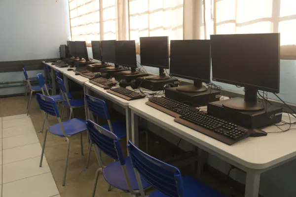
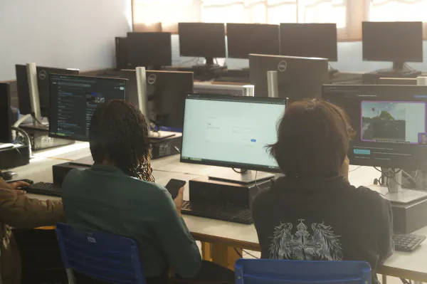

Ensino Técnico
Conhecimento para novos caminhos.
O Ensino Técnico amplia as possibilidades de formação ao aproximar conhecimentos escolares de diferentes campos de atuação.
Conheça as opções apresentadas pelo colégio e escolha a área que mais combina com seus interesses.

Escolha seu caminho
Conheça os cursos.
Explore as três áreas do Ensino Técnico. As páginas com os detalhes de cada curso serão disponibilizadas futuramente.

Página em preparação Administração